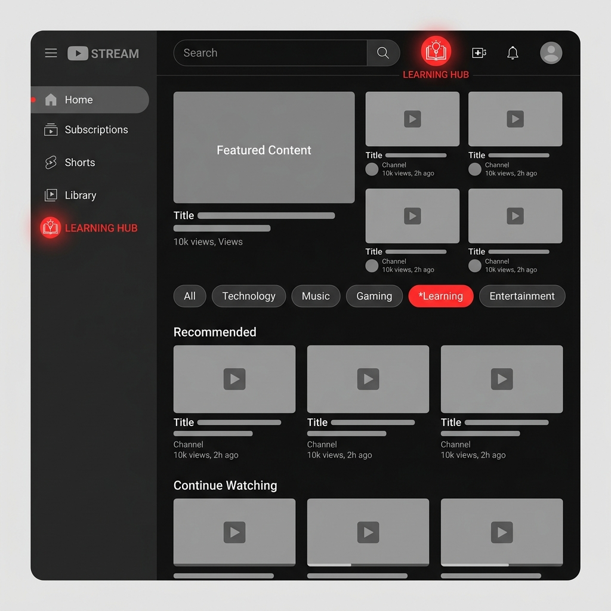
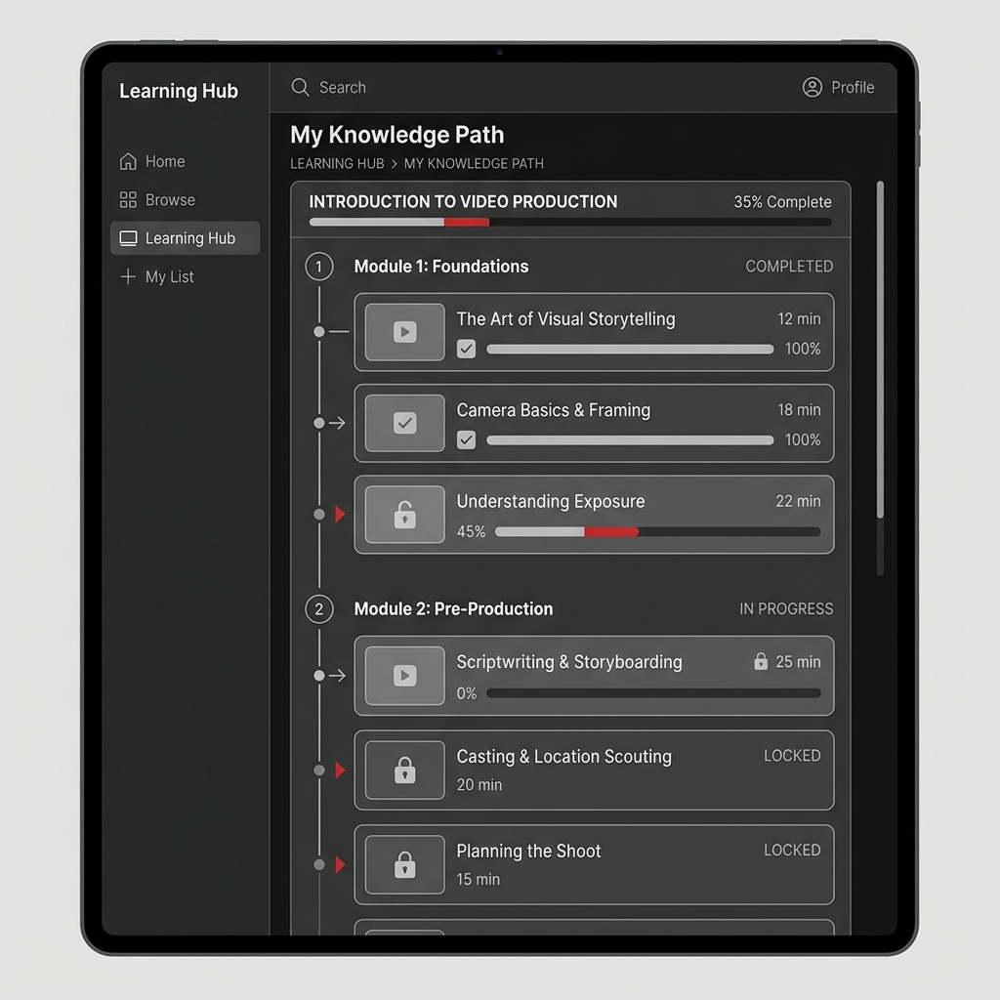
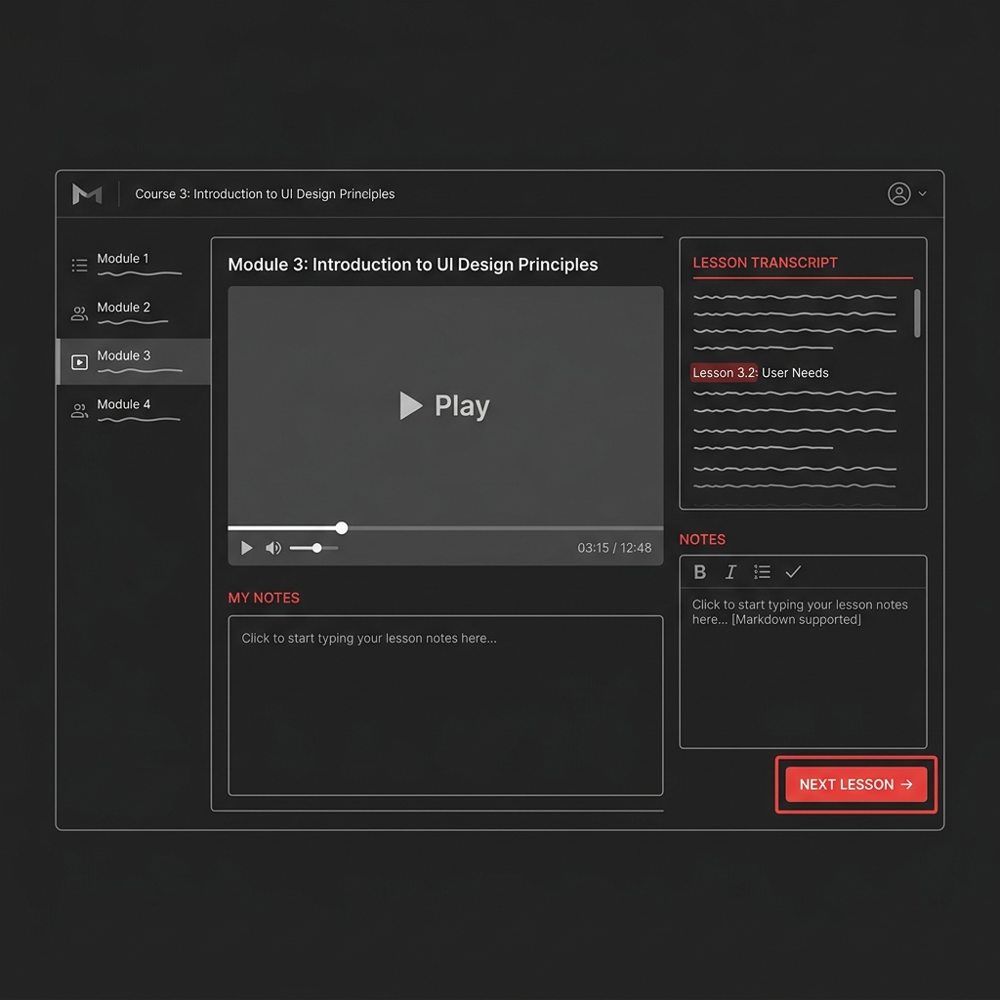

Unlocking the structured learning vertical on YouTube through AI-curated "Knowledge Path Engines" designed to combat fragmentation and enable linear mastery.
The market is heavily fragmented. YouTube overwhelmingly dominates the "casual learning" and specific query troubleshooting segments. However, structurally rigorous platforms like Coursera and Udemy own "structured/certified learning." There is a multi-billion dollar gap in user retention between casual viewers and outcome-driven lifelong learners on YouTube.
Highest-quality educational content already exists natively on YouTube. However, it exists in silos. Users attempting to learn complex subjects cannot find a cohesive, linear path to mastery. This friction results in massive completion drop-offs, decision fatigue, and users abandoning the app for paid, structured competitors.
Transform YouTube from an isolated content repository into an intelligent educational ecosystem. Introducing the Knowledge Path Engine: An AI-curated linear curriculum that stitches together fragmented creator videos into a unified syllabus. By adding progress tracking, integrated quizzes, and an immersive "Classroom Mode" UI, YouTube can convert casual viewers into dedicated upskillers.
Utilize LLMs to analyze user's learning goals and automatically stitch together the highest-rated existing YouTube videos into a cohesive, chapter-based linear path, complete with progress tracking.
Provide specific "YouTube Edu" tools for verified creators to manually group their videos into structured courses, unlockable either sequentially or behind a membership paywall.
Introduce real-time community chat and 'Study With Me' virtual rooms clustered around specific academic topics, integrating community directly into the video player.
Impact vs. Effort Matrix
High Impact, Medium-High Effort. Chosen as the primary MVP because it leverages YouTube's existing massive data advantage (the videos) and uses AI to instantly create structure without placing additional burden on creators.

Prominent 'Learning Hub' entry point in the core navigation.

The interior hub showing the AI-curated linear learning timeline.

Distraction-free learning layout focusing on content retention.